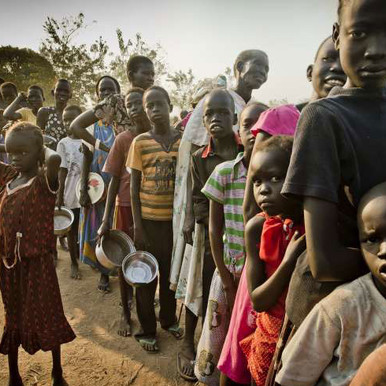

مشروع شامل لـ القرض الحسن لصغار المنتجين والفقراء الناشطين إقتصادياً
عن المشروع
مشروع شامل للقرض الحسن لصغار المنتجين والفقراء الناشطين إقتصادياً هو أحد محاور البرنامج الشامل لـ الأمان الإجتماعي لمعالجة الفقر متعدد الأبعاد وذلك لتمكين لصغار المنتجين والفقراء الناشطين إقتصادياً من الحصول على التمويل بطرق ميسرة ومن غير أرباح عبر فروع المصارف المشاركة في المشروع, يغطي المشروع كل ولايات السودان
شركاء التنفيذ
مفوضية الأمان الإجتماعي والتكافل وخفض الفقر.
ديوان الزكاة.
مصرف الإدخار والتنمية الإجتماعية.
بنك الأسرة.
وزارات التنمية الإجتماعية بولايات السودان المختلفة.
أهداف المشروع
تخفيف حدة الفقر.
تفعيل شبكات الأمان المنتجة.
توفير فرص وزيادة الدخل للمستهدفين.
بناء القدرات وتوفير فرص التدريب.
زيادة ثقافة التعامل مع المصارف.
الأسس والمعايير للشرائح المستهدفة بتمويل القرض الحسن
الفقراء الناشطين إقتصادياً.
الأرامل والمطلقات كافلات الأيتام في المدارس والجامعات الحكومية ( أساس / ثانوي / جامعات ).
بائعات الأطعمة والأغذية والباعة المتجولون .
أصحاب الأعمال الحرة الصغير كالحرفين والنجارين والحدادين والمزارعين والرعاة.
العمال ذوي الدخل المحدود بمعيار الحد الأدنى للأجور.
لامانع لتقديم التمويل للأفراد والمجموعات التي تنطبق عليها الشروط أعلاه *
المستندات_المطلوبة
الأوراق الثبوتية (الرقم الوطني، بطاقة شخصية سارية المفعول ).
دراسة جدوى للمشروع.
دراسة حالة لمقدم الطلب.
أن يتم التمويل لمستفيد واحد في الأسرة الواحدة .
أن يتم إرفاق المستندات التي تثبت ذلك (شروط التمويل المذكورة في أولاً).
طلب التمويل يوضح فية الغرض من التمويل والصيغة .
شهادة سكن.
عدد (2 صورة فوتوغرافية).
مشروع إستهداف وتحسين الفقراء

عن المشروع
من اجل تحقيق العداله الأجتماعية وتخفيف حدت الفقر تبنت وزارة العمل العمل والتنمية الأجتماعية العديد من استراتجيات والمبادرات والبرامج والمشروعات.
تعتبر الإحصائات والبيانات اهم الركائز الاساسيه لوضع السياسات والخطط التنموية والبرامج التي تستهدف الفئات الفقيرة والأكثر فقرا,مما يستدعي الحوجه لنظام معلومات وتطوير آليات ومنتهجيات استهداف الفقراء كالإستهداف الإلكتروني لتطوير برامج التدخلات لتخفيف الفقر,وتحقيق التنمية المستدامة
أهداف المشروع
توفير قاعدة بيانات ومعلومات لحصر وتصنيف الفقراء
لتعرف على الحياة الإجتماعية بشكل عام في القاضية المتعلقه بالفقر لضمان إدماج كل الفقراء في برامج خفض الفقر
تحسين الإستهداف لتوزيع الموارد بعدالة وإنصاف
حصر وتصنيف الفقراء لإستنباط مؤشرات وطنية وإعداد خارطة لإحتياجات الولايات
تمكين متخذي القرار من المعلومات بصورة آنية ودقيقة وعادلة وشفافة
المساهمه في صناعة القرارات اللازمة لعملية التخطيط التنموي وتعزيز حزمة التدخلات للمجتمعات الاكثر فقرا في الولايات
إستنباط مؤشرات وطنية وإعداد خارطة للفقر وتحديد إحتياجات الولايات
إدماج أهداف التنمية الوطنية وأهداف التنميه المستدامة الخاصة بالفقر في الخطط والسياسات والبرامج
آليات التنفيذ
تنفذ مفوضية الأمان الإجتماعي والتكافل وخفض الفقر المشروع بالتنسيق مع الجهاز المركزي للإحصاء على مستوى المراكز والولايات, بمشاركة الوزارات القطاعية والجامعات والمراكز البحثية واللجان القاعدية ومنظمات المجتمع المدني.
المناطق المستهدفة
جميع ولايات السودان(18 ولاية) وينفذ على ثلاث مراحل وفقا لمنهجية القوائم:
الدعم النقدي المباشر
التأمين الصحي
التمويل الأصغر
القرض الحسن
وتستهدف المرحلة الاولى ولايات المرحلة ( الخرطوم, القضارف, شمال كردفان, نهر النيل, البحر الأحمر, وسط دارفور, النيل الأزرق)
الوسائل والأدوات
ينفذ المشروع عن طريق إستهداف إلكتروني بأحدث الأجهزه والتقنيات التي تضمن كفاءة عالية للعمليات الميدانية, وأعلى جودة للبيانات (يستخدم الجهاز اللوحي التاب), وتجميع معلومات عبر مختلف الوسائل: